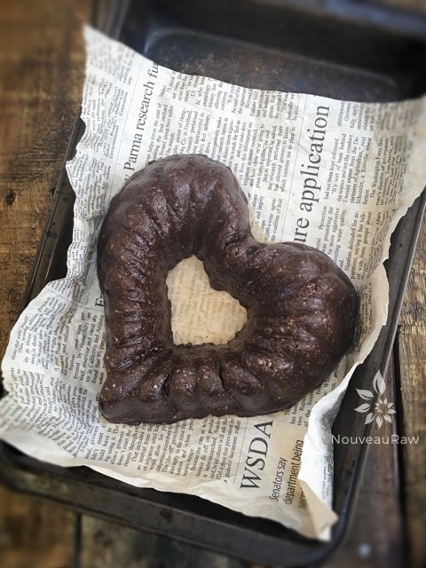
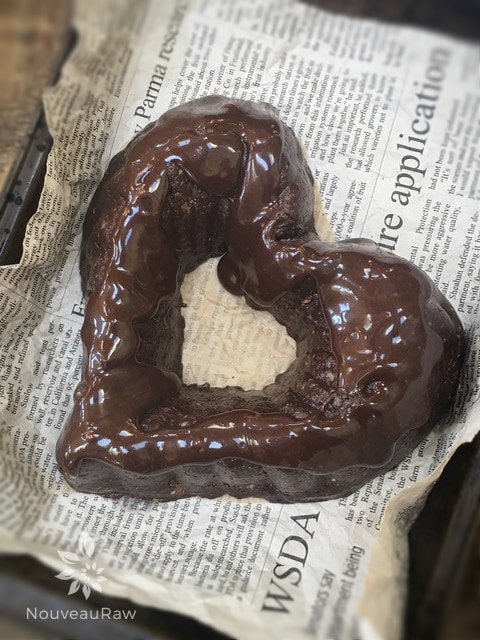
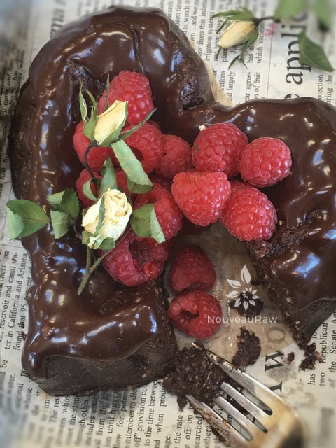

Chocolate Lava Cake
~ raw, vegan, gluten-free ~
True decadence at its best… deep, dark, and chocolatey… Oh, don’t let the simplicity of this recipe trick you into thinking that it is just a hum-drum cake. I have yet to find a person who doesn’t just love it. This cake will leave chocoholics with a smile on their face and empty plates for you to wash.
Tasting deeply of chocolate, with dark, almost bitter notes that penetrate the whole bite is beautifully balanced with the refreshing taste of orange. Initially, I relied on the fresh oranges to bring in that brightness, but I have since started to add orange oil to the cake batter which brought it to a whole new level.
I don’t only want you to feel good when you eat this cake; I want you to feel good while you make this cake! That is where the orange oil comes into play. The sweet fragrance encourages positive emotions of peace and well-being.
So be sure to take some deep inhales when you remove the lid from the bottle. Don’t confuse this with orange extract; the oil is cold-pressed from the orange rind. I hope you enjoy this cake!
Ingredients:
Cake:
- 1 1/2 cups raw walnuts, soaked & dehydrated
- 8 Medjool dates, pitted
- 1/3 cup raw cacao powder
- 1/3 cup chocolate ganache (see recipe below)
- 1 Tbsp dried coconut, unsweetened
- 1 tsp orange extract or 10 drops orange oil
- 1/2 tsp vanilla extract
- Pinch Himalayan pink salt
Chocolate ganache: yields 1 cup
- 3/4 cup maple syrup
- 3/4 cup raw cacao powder
- 1/3 cup virgin coconut oil, melted
- 1/8 tsp Himalayan pink salt
Preparation:
Cake:
- Place the walnuts and salt in the food processor fitted with the “S” blade and process until finely ground.
- Add the dates and process until the mixture begins to stick together.
- Add the cacao powder, vanilla, dried coconut, and chocolate ganache and process until it all well incorporated.
- Be creative – use different cake molds. Just press firmly into the mold and pop in the freezer. Once firm, remove from mold and decorate to your liking!
Chocolate ganache:
- Place all of the ingredients in a blender and process until smooth.
- If need be, stop occasionally to scrape down the sides of the blender jar with a rubber spatula.
- The ganache will take on a glossy look when done blending.
- Pour the frosting over the cake allowing it to drip down the sides.
- Once you place the cake in the fridge, it will harden up, but at room temperature, it will get soft again.
- Decorate with seasonal fruit or eat as is.
- Store in a glass container in the fridge. It is great to not only use on cakes but also on cookies, as a dipping sauce for apples … oh come on, do I even have to offer ideas as to what to do with chocolate!

Using a heart shaped cake mold is optional but does add a beautiful touch.

Drizzle rich dark chocolate ganaches on top and add your favorite seasonal fruit in the center.

© AmieSue.com